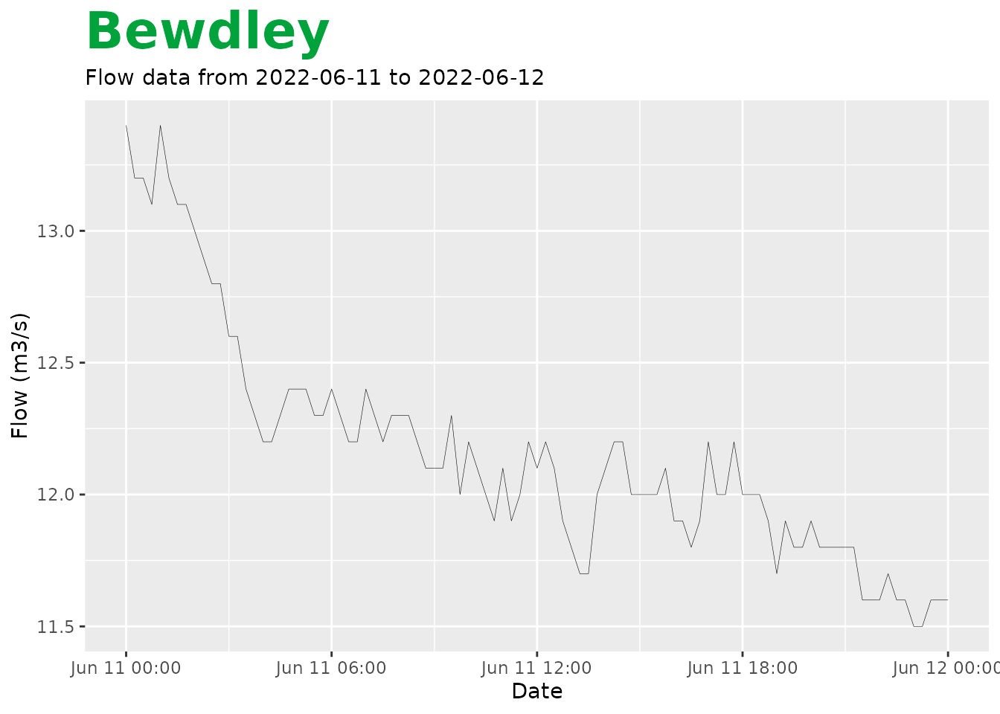
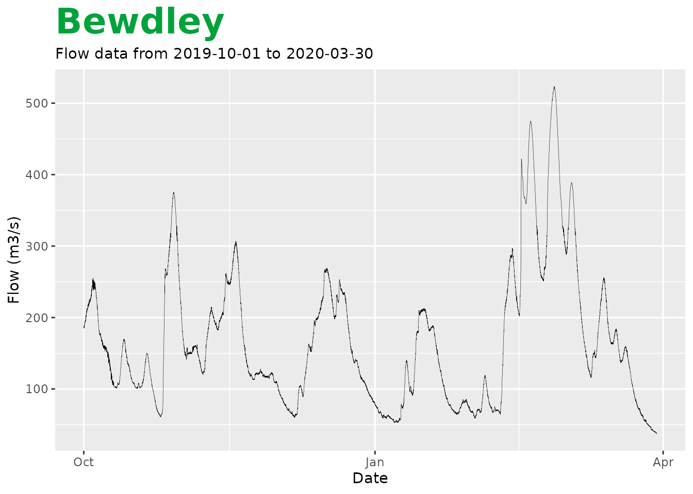

Introduction to data importing
Welcome to riskyData!
The package riskyData has been developed for the
Evidence and Risk colleagues to cleanly and reliably import data from
the Environment Agencies API.
Loading the package
The riskyData package is part of a group of tools called
flode. To load all these packages, the easiest way is to
use;
library(flode)However, if you only require just the riskyData package
you can just use;
Example I - List all sites in API
The loadAPI() function forms the basis of
riskyData. Most operations relate in some manner to this.
Running the code with no parameters or ID = NULL or
ID = "all" will return the station list
This is not just limited to WISKI sites, some water quality data are also present. This functionality will be expanded upon in future versions.
Note this can take some time to load
loadAPI()
#> wiskiID label riverName observedProperty
#> <char> <char> <char> <char>
#> 1: 037048U Ulting Sarasota River Chelmer waterFlow
#> 2: 510810 Beggearn Huish Washford River waterLevel
#> 3: 510810 Beggearn Huish Washford River waterFlow
#> 4: F0803 Adwick River Dearne waterLevel
#> 5: F0803 Adwick River Dearne waterFlow
#> ---
#> 18438: <NA> FROME_KNIGHTS MALTINGS_E_202409 SOMERSET FROME dissolved-oxygen
#> 18439: <NA> FROME_KNIGHTS MALTINGS_E_202409 SOMERSET FROME conductivity
#> 18440: <NA> FROME_KNIGHTS MALTINGS_E_202409 SOMERSET FROME temperature
#> 18441: <NA> FROME_KNIGHTS MALTINGS_E_202409 SOMERSET FROME ph
#> 18442: <NA> FROME_KNIGHTS MALTINGS_E_202409 SOMERSET FROME turbidity
#> easting northing lat long dateOpened dateClosed catchmentArea
#> <int> <int> <num> <num> <list> <list> <num>
#> 1: 581271 208591 51.74668 0.624437 2008-10-31 [NULL] NA
#> 2: 304007 139460 51.14632 -3.373695 1967-01-01 [NULL] 36.3
#> 3: 304007 139460 51.14632 -3.373695 1967-01-01 [NULL] 36.3
#> 4: 447677 402022 53.51271 -1.282505 1956-10-29 [NULL] 311.0
#> 5: 447677 402022 53.51271 -1.282505 1956-10-29 [NULL] 311.0
#> ---
#> 18438: 378541 146995 51.22174 -2.308649 2024-10-04 [NULL] NA
#> 18439: 378541 146995 51.22174 -2.308649 2024-10-04 [NULL] NA
#> 18440: 378541 146995 51.22174 -2.308649 2024-10-04 [NULL] NA
#> 18441: 378541 146995 51.22174 -2.308649 2024-10-04 [NULL] NA
#> 18442: 378541 146995 51.22174 -2.308649 2024-10-04 [NULL] NA
#> nrfaStationID
#> <char>
#> 1: <NA>
#> 2: 51003
#> 3: 51003
#> 4: 27030
#> 5: 27030
#> ---
#> 18438: <NA>
#> 18439: <NA>
#> 18440: <NA>
#> 18441: <NA>
#> 18442: <NA>If you wish to constrain these data to NRFA or WISKI sites only add
“nrfa” or “wiski” to the ID argument. There’s also an
additional API that this function can connect to that contains real time
data, for real time data use “flood” and for tidal sites use
“tidal”.
Using these in the obsProperty argument you can filter
your results to certain types of gauges. With this you are limited
to;
| Parameter | observedProperty | Unit |
|---|---|---|
| Flow | waterFlow | m3S-1 |
| Stage/Level | waterLevel | m |
| Rainfall | rainfall | mm |
| Groundwater Level | groundwaterLevel | mAOD |
| Ammonium | ammonium | mg/L |
| Disolved Oxygen | dissolved-oxygen | mg/L or % |
| Conductivity | conductivity | cm |
| pH | ph | |
| Temperature | temperature | C |
| Turbidity | turbidity | NTU |
| Nitrate | nitrate | mg/L (as N) |
| Chlorophyll | chlorophyll | |
| Salinity | salinity | g/L |
| Blue Green Algae | bga | RFU |
| Fluorescent Dissolved Organic Matter | fdom | RFU |
To load all data you can also use;
# Note code not run
loadAPI(ID = "all") # does the same as loadAPI()If we wished to load all the flow sites with WISKI data available we can use;
loadAPI(ID = "wiski", obsProperty = "waterFlow")
#> wiskiID label riverName observedProperty easting
#> <char> <char> <char> <char> <int>
#> 1: 037048U Ulting Sarasota River Chelmer waterFlow 581271
#> 2: 510810 Beggearn Huish Washford River waterFlow 304007
#> 3: F0803 Adwick River Dearne waterFlow 447677
#> 4: SS90F011 Thorverton River Exe waterFlow 293602
#> 5: 521410 Iwood Congresbury Yeo waterFlow 345173
#> ---
#> 1179: 253211017 Chessbridge Chess Stream waterFlow 521667
#> 1180: 351221005 Tilley Bridge Nunningham Stream waterFlow 566193
#> 1181: 4047 Blyth Oldcotes Oldcoates Dyke waterFlow 461470
#> 1182: 2884 Burlington - Worfe River Worfe waterFlow 378175
#> 1183: ST21F003 Yalham Farm Trib (otter) waterFlow 321916
#> northing lat long dateOpened dateClosed
#> <int> <num> <num> <list> <list>
#> 1: 208591 51.74668 0.624437 2008-10-31 [NULL]
#> 2: 139460 51.14632 -3.373695 1967-01-01 [NULL]
#> 3: 402022 53.51271 -1.282505 1956-10-29 [NULL]
#> 4: 101602 50.80417 -3.511302 1956-04-30 [NULL]
#> 5: 163064 51.36398 -2.788890 1973-03-12 [NULL]
#> ---
#> 1179: 117269 50.94203 -0.269620 1964-11-27 [NULL]
#> 1180: 112875 50.89145 0.361642 1950-03-15 [NULL]
#> 1181: 387550 53.38122 -1.077358 1970-09-01 [NULL]
#> 1182: 310915 52.69546 -2.324363 1999-05-26 [NULL]
#> 1183: 114949 50.92868 -3.112434 1969-04-18,1969-04-17,2024-04-13 [NULL]
#> catchmentArea nrfaStationID
#> <num> <char>
#> 1: NA <NA>
#> 2: 36.3 51003
#> 3: 311.0 27030
#> 4: 600.9 45001
#> 5: NA 52017
#> ---
#> 1179: NA 41028
#> 1180: NA 41001
#> 1181: 85.0 28047
#> 1182: NA <NA>
#> 1183: NA <NA>Or if we wished to load the sites that are used within the National River Flow Archive (NRFA);
loadAPI(ID = "nrfa")
#> wiskiID label riverName observedProperty easting
#> <char> <char> <char> <char> <int>
#> 1: 510810 Beggearn Huish Washford River waterLevel 304007
#> 2: 510810 Beggearn Huish Washford River waterFlow 304007
#> 3: F0803 Adwick River Dearne waterLevel 447677
#> 4: F0803 Adwick River Dearne waterFlow 447677
#> 5: 2048 Wellesbourne River Dene waterLevel 427271
#> ---
#> 1640: 253211017 Chessbridge Chess Stream waterFlow 521667
#> 1641: 351221005 Tilley Bridge Nunningham Stream waterFlow 566193
#> 1642: 4047 Blyth Oldcotes Oldcoates Dyke waterLevel 461470
#> 1643: 4047 Blyth Oldcotes Oldcoates Dyke waterFlow 461470
#> 1644: 0890TH Thorpe Lakes <NA> rainfall 502777
#> northing lat long dateOpened dateClosed catchmentArea
#> <int> <num> <num> <list> <list> <num>
#> 1: 139460 51.14632 -3.373695 1967-01-01 [NULL] 36.3
#> 2: 139460 51.14632 -3.373695 1967-01-01 [NULL] 36.3
#> 3: 402022 53.51271 -1.282505 1956-10-29 [NULL] 311.0
#> 4: 402022 53.51271 -1.282505 1956-10-29 [NULL] 311.0
#> 5: 255587 52.19784 -1.602416 1976-05-12 [NULL] NA
#> ---
#> 1640: 117269 50.94203 -0.269620 1964-11-27 [NULL] NA
#> 1641: 112875 50.89145 0.361642 1950-03-15 [NULL] NA
#> 1642: 387550 53.38122 -1.077358 1970-09-01 [NULL] 85.0
#> 1643: 387550 53.38122 -1.077358 1970-09-01 [NULL] 85.0
#> 1644: 167930 51.40109 -0.523920 2024-04-11 [NULL] NA
#> nrfaStationID
#> <char>
#> 1: 51003
#> 2: 51003
#> 3: 27030
#> 4: 27030
#> 5: 54048
#> ---
#> 1640: 41028
#> 1641: 41001
#> 1642: 28047
#> 1643: 28047
#> 1644: 39042To view sites that have realtime data available use;
loadAPI(ID = "flood")
#> stationReference wiskiID label parameter
#> <char> <char> <char> <char>
#> 1: 1029TH 1029TH Bourton Dickler waterLevel
#> 2: 1029TH 1029TH Bourton Dickler waterLevel
#> 3: E2043 L31004 Surfleet Sluice waterLevel
#> 4: 52119 520320_FW Gaw Bridge waterLevel
#> 5: E21136 L33865 Hemingford waterLevel
#> ---
#> 6250: 5116 <NA> Retford Grove Lane waterLevel
#> 6251: 067650 <NA> FINCHETTS GUTTER CLIFTON DRIVE waterLevel
#> 6252: 3350 432715 Fordingbridge Bowerwood Road <NA>
#> 6253: E30010 0 Bristol Wade Street waterLevel
#> 6254: SE97WVS0CC <NA> Weaverthorpe Slack waterLevel
#> parameterName riverName
#> <char> <char>
#> 1: Water Level River Dikler
#> 2: Water Level River Dikler
#> 3: Water Level River Glen
#> 4: Water Level River Parrett
#> 5: Water Level River Great Ouse
#> ---
#> 6250: Water Level <NA>
#> 6251: Water Level <NA>
#> 6252: <NA> River Avon
#> 6253: Water Level River Frome
#> 6254: Water Level <NA>
#> catchmentName easting northing
#> <char> <num> <num>
#> 1: Cotswolds 417990 219610
#> 2: Cotswolds 417990 219610
#> 3: Welland 528000 329300
#> 4: Parrett, Brue and West Somerset Streams 344383 119926
#> 5: Upper and Bedford Ouse 529500 271200
#> ---
#> 6250: <NA> 471204 380960
#> 6251: <NA> 338504 367168
#> 6252: Hampshire Avon 414100 113960
#> 6253: Bristol Avon Little Avon Axe and North Somerset St 359728 173569
#> 6254: <NA> NA NA
#> lat long gridReference dateOpened datumOffset
#> <num> <num> <char> <char> <num>
#> 1: 51.87477 -1.740083 <NA> 1994-01-01 NA
#> 2: 51.87477 -1.740083 <NA> 1994-01-01 NA
#> 3: 52.84599 -0.100848 <NA> 1992-01-01 2.0
#> 4: 50.97604 -2.793549 <NA> 1997-01-01 10.0
#> 5: 52.32362 -0.101287 TL 2950 7120 1996-10-01 6.3
#> ---
#> 6250: 53.32077 -0.932530 SK7120480960 <NA> NA
#> 6251: 53.19801 -2.921992 SJ3850467168 <NA> NA
#> 6252: 50.92492 -1.800752 SU1410013960 2006-04-06 NA
#> 6253: 51.45965 -2.581039 ST5972973569 2024-08-19 NA
#> 6254: NA NA SE9672 <NA> NAFinally for tidal sites use;
loadAPI(ID = "tidal")
#> stationReference label parameter parameterName riverName
#> <char> <char> <char> <char> <char>
#> 1: E70039 Lowestoft waterLevel Water Level Tide
#> 2: E70024 Lowestoft waterLevel Water Level <NA>
#> 3: E72639 Avonmouth Portbury waterLevel Water Level Tide
#> 4: E72624 Avonmouth Portbury waterLevel Water Level <NA>
#> 5: E71539 Sheerness waterLevel Water Level Tide
#> 6: E71524 Sheerness waterLevel Water Level <NA>
#> 7: E71939 Bournemouth waterLevel Water Level Tide
#> 8: E71924 Bournemouth waterLevel Water Level <NA>
#> 9: E71239 Cromer waterLevel Water Level Tide
#> 10: E71224 Cromer waterLevel Water Level <NA>
#> 11: E72039 Weymouth waterLevel Water Level Tide
#> 12: E72024 Weymouth waterLevel Water Level <NA>
#> 13: E71639 Dover waterLevel Water Level Tide
#> 14: E71624 Dover waterLevel Water Level <NA>
#> 15: E73439 Heysham waterLevel Water Level Tide
#> 16: E73424 Heysham waterLevel Water Level <NA>
#> 17: E72439 Ilfracombe waterLevel Water Level Tide
#> 18: E72424 Ilfracombe waterLevel Water Level <NA>
#> 19: E70939 North Shields waterLevel Water Level Tide
#> 20: E70924 North Shields waterLevel Water Level <NA>
#> 21: E73639 Workington waterLevel Water Level Tide
#> 22: E73624 Workington waterLevel Water Level <NA>
#> 23: E72139 Plymouth waterLevel Water Level Tide
#> 24: E72124 Plymouth waterLevel Water Level <NA>
#> 25: E71739 Newhaven waterLevel Water Level Tide
#> 26: E71724 Newhaven waterLevel Water Level <NA>
#> 27: E71039 Whitby waterLevel Water Level Tide
#> 28: E71024 Whitby waterLevel Water Level <NA>
#> 29: E70139 Liverpool waterLevel Water Level <NA>
#> 30: E70124 Liverpool waterLevel Water Level <NA>
#> 31: E72539 Hinkley Point waterLevel Water Level Tide
#> 32: E72524 Hinkley Point waterLevel Water Level <NA>
#> 33: E71439 Harwich waterLevel Water Level Tide
#> 34: E71424 Harwich waterLevel Water Level <NA>
#> 35: E72239 Newlyn waterLevel Water Level Tide
#> 36: E72224 Newlyn waterLevel Water Level <NA>
#> 37: E71839 Portsmouth waterLevel Water Level <NA>
#> 38: E71824 Portsmouth waterLevel Water Level <NA>
#> 39: E71139 Immingham waterLevel Water Level Tide
#> 40: E71124 Immingham waterLevel Water Level <NA>
#> 41: E72324 St Marys waterLevel Water Level <NA>
#> 42: E72339 St Marys waterLevel Water Level <NA>
#> 43: E73939 Portrush waterLevel Water Level <NA>
#> 44: E73924 Portrush waterLevel Water Level <NA>
#> 45: E70539 Holyhead waterLevel Water Level <NA>
#> 46: E70524 Holyhead waterLevel Water Level <NA>
#> 47: E73139 Fishguard waterLevel Water Level <NA>
#> 48: E73124 Fishguard waterLevel Water Level <NA>
#> 49: E70439 Ullapool waterLevel Water Level <NA>
#> 50: E70424 Ullapool waterLevel Water Level <NA>
#> 51: E70824 Leith waterLevel Water Level <NA>
#> 52: E70839 Leith waterLevel Water Level <NA>
#> 53: E72924 Mumbles waterLevel Water Level <NA>
#> 54: E72939 Mumbles waterLevel Water Level <NA>
#> 55: E72839 Newport waterLevel Water Level <NA>
#> 56: E72825 Newport waterLevel Water Level <NA>
#> 57: E72824 Newport waterLevel Water Level <NA>
#> 58: E70739 Aberdeen waterLevel Water Level <NA>
#> 59: E70724 Aberdeen waterLevel Water Level <NA>
#> 60: E73024 Milford Haven waterLevel Water Level <NA>
#> 61: E73039 Milford Haven waterLevel Water Level <NA>
#> 62: E74039 Millport waterLevel Water Level <NA>
#> 63: E74024 Millport waterLevel Water Level <NA>
#> 64: E73839 Bangor waterLevel Water Level <NA>
#> 65: E73824 Bangor waterLevel Water Level <NA>
#> 66: E70624 Wick waterLevel Water Level <NA>
#> 67: E70639 Wick waterLevel Water Level <NA>
#> 68: E73524 Port Erin waterLevel Water Level <NA>
#> 69: E73539 Port Erin waterLevel Water Level <NA>
#> 70: E70339 Kinlochbervie waterLevel Water Level <NA>
#> 71: E70324 Kinlochbervie waterLevel Water Level <NA>
#> 72: E74224 Tobermory waterLevel Water Level <NA>
#> 73: E74239 Tobermory waterLevel Water Level <NA>
#> 74: E73739 Portpatrick waterLevel Water Level <NA>
#> 75: E73724 Portpatrick waterLevel Water Level <NA>
#> 76: E74324 Stornoway waterLevel Water Level <NA>
#> 77: E74339 Stornoway waterLevel Water Level <NA>
#> 78: E70239 Jersey waterLevel Water Level <NA>
#> 79: E70224 Jersey waterLevel Water Level <NA>
#> 80: E73224 Barmouth waterLevel Water Level <NA>
#> 81: E73239 Barmouth waterLevel Water Level <NA>
#> 82: E74424 Lerwick waterLevel Water Level <NA>
#> 83: E74439 Lerwick waterLevel Water Level <NA>
#> 84: E73324 Llandudno waterLevel Water Level <NA>
#> 85: E73339 Llandudno waterLevel Water Level <NA>
#> 86: E72623 Avonmouth Portbury waterLevel Water Level <NA>
#> stationReference label parameter parameterName riverName
#> catchmentName easting northing lat long gridReference
#> <char> <int> <int> <num> <num> <char>
#> 1: England - East Coast 654780 292741 52.47308 1.750085 TM 5478 9274
#> 2: <NA> 654781 292745 52.47311 1.750110 TM 54781 92745
#> 3: England - South Coast 349530 178147 51.49999 -2.728468 ST 4953 7815
#> 4: <NA> 349530 178148 51.50000 -2.728470 ST 49530 78148
#> 5: England - East Coast 590740 175419 51.44563 0.743415 TQ 9074 7542
#> 6: <NA> 590742 175420 51.44564 0.743440 TQ 90742 75420
#> 7: England - South Coast 408930 90530 50.71433 -1.874873 SZ 0893 9053
#> 8: <NA> 408931 90530 50.71433 -1.874860 SZ 08931 90530
#> 9: England - East Coast 621979 342539 52.93432 1.301623 TG 2198 4254
#> 10: <NA> 621980 342544 52.93436 1.301640 TG 21980 42544
#> 11: England - South Coast 368399 78850 50.60850 -2.447945 SY 6840 7885
#> 12: <NA> 368399 78850 50.60850 -2.447940 SY 68399 78850
#> 13: England - South Coast 632650 140260 51.11437 1.322641 TR 3265 4026
#> 14: <NA> 632652 140262 51.11439 1.322670 TR 32652 40262
#> 15: England - West Coast 339820 459928 54.03180 -2.920253 SD 3982 5993
#> 16: <NA> 339820 459932 54.03183 -2.920250 SD 39820 59932
#> 17: England - South Coast 252549 147891 51.21113 -4.112362 SS 5255 4789
#> 18: <NA> 252547 147892 51.21114 -4.112390 SS 52547 47892
#> 19: England - East Coast 435929 568240 55.00742 -1.439769 NZ 3593 6824
#> 20: <NA> 435928 568243 55.00744 -1.439780 NZ 35928 68243
#> 21: England - West Coast 298980 529529 54.65069 -3.567170 NX 9898 2953
#> 22: <NA> 298980 529532 54.65072 -3.567170 NX 98980 29532
#> 23: England - South Coast 244690 54339 50.36840 -4.185217 SX 4469 5434
#> 24: <NA> 244688 54338 50.36839 -4.185250 SX 44688 54338
#> 25: England - South Coast 545109 100039 50.78178 0.057004 TQ 4511 0004
#> 26: <NA> 545111 100040 50.78178 0.057030 TQ 45111 00040
#> 27: England - East Coast 489840 511399 54.48997 -0.614597 NZ 8984 1140
#> 28: <NA> 489839 511403 54.49000 -0.614610 NZ 89839 11403
#> 29: <NA> 332490 395254 53.44969 -3.018000 SJ 32490 95254
#> 30: <NA> 332490 395254 53.44969 -3.018000 SJ 32490 95254
#> 31: England - South Coast 321070 146320 51.21061 -3.131326 ST 2107 4632
#> 32: <NA> 321093 146364 51.21100 -3.131000 ST 21093 46364
#> 33: England - South Coast 626340 232841 51.94798 1.292108 TM 2634 3284
#> 34: <NA> 626342 232843 51.94800 1.292140 TM 26342 32843
#> 35: England - South Coast 146759 28559 50.10301 -5.542779 SW 4676 2856
#> 36: <NA> 146743 28559 50.10300 -5.543000 SW 46743 28559
#> 37: <NA> 462731 100679 50.80228 -1.111170 SU 62731 00679
#> 38: <NA> 462731 100679 50.80228 -1.111170 SU 62731 00679
#> 39: England - East Coast 519959 416378 53.63018 -0.187420 TA 1996 1638
#> 40: <NA> 519959 416382 53.63022 -0.187420 TA 19959 16382
#> 41: <NA> 90268 10966 49.91847 -6.316420 SV 90268 10966
#> 42: <NA> 90268 10966 49.91847 -6.316420 SV 90268 10966
#> 43: <NA> 103846 600180 55.20678 -6.656830 NR 03846 00180
#> 44: <NA> 103846 600180 55.20678 -6.656830 NR 03846 00180
#> 45: <NA> 225529 382871 53.31394 -4.620440 SH 25529 82871
#> 46: <NA> 225529 382871 53.31394 -4.620440 SH 25529 82871
#> 47: <NA> 195337 239182 52.01322 -4.983750 SM 95337 39182
#> 48: <NA> 195337 239182 52.01322 -4.983750 SM 95337 39182
#> 49: <NA> 212929 893910 57.89525 -5.157890 NH 12929 93910
#> 50: <NA> 212929 893910 57.89525 -5.157890 NH 12929 93910
#> 51: <NA> 326379 678062 55.98983 -3.181690 NT 26379 78062
#> 52: <NA> 326379 678062 55.98983 -3.181690 NT 26379 78062
#> 53: <NA> 263188 187531 51.57000 -3.975440 SS 63188 87531
#> 54: <NA> 263188 187531 51.57000 -3.975440 SS 63188 87531
#> 55: <NA> 331629 183920 51.55000 -2.987440 ST 31629 83920
#> 56: <NA> 331629 183920 51.55000 -2.987440 ST 31629 83920
#> 57: <NA> 331629 183920 51.55000 -2.987440 ST 31629 83920
#> 58: <NA> 395417 805913 57.14406 -2.077360 NJ 95417 05913
#> 59: <NA> 395417 805913 57.14406 -2.077360 NJ 95417 05913
#> 60: <NA> 189261 205371 51.70739 -5.051530 SM 89261 05371
#> 61: <NA> 189261 205371 51.70739 -5.051530 SM 89261 05371
#> 62: <NA> 217690 654544 55.74981 -4.906330 NS 17690 54544
#> 63: <NA> 217690 654544 55.74981 -4.906330 NS 17690 54544
#> 64: <NA> 163460 536151 54.66475 -5.669470 NW 63460 36151
#> 65: <NA> 163460 536151 54.66475 -5.669470 NW 63460 36151
#> 66: <NA> 336679 950811 58.44097 -3.086310 ND 36679 50811
#> 67: <NA> 336679 950811 58.44097 -3.086310 ND 36679 50811
#> 68: <NA> 219040 469043 54.08539 -4.768060 SC 19040 69043
#> 69: <NA> 219040 469043 54.08539 -4.768060 SC 19040 69043
#> 70: <NA> 222145 956079 58.45661 -5.050080 NC 22145 56079
#> 71: <NA> 222145 956079 58.45661 -5.050080 NC 22145 56079
#> 72: <NA> 150790 755309 56.62311 -6.064220 NM 50790 55309
#> 73: <NA> 150790 755309 56.62311 -6.064220 NM 50790 55309
#> 74: <NA> 199760 554214 54.84256 -5.120030 NW 99760 54214
#> 75: <NA> 199760 554214 54.84256 -5.120030 NW 99760 54214
#> 76: <NA> 142280 932739 58.20781 -6.388970 NB 42280 32739
#> 77: <NA> 142280 932739 58.20781 -6.388970 NB 42280 32739
#> 78: <NA> 391593 -79699 49.18333 -2.116670 SY 91593 -79699
#> 79: <NA> 391593 -79699 49.18333 -2.116670 SY 91593 -79699
#> 80: <NA> 261969 315483 52.71933 -4.045030 SH 61969 15483
#> 81: <NA> 261969 315483 52.71933 -4.045030 SH 61969 15483
#> 82: <NA> 447829 1141374 60.15403 -1.140310 HU 47829 41374
#> 83: <NA> 447829 1141374 60.15403 -1.140310 HU 47829 41374
#> 84: <NA> 278549 383195 53.33167 -3.825220 SH 78549 83195
#> 85: <NA> 278549 383195 53.33167 -3.825220 SH 78549 83195
#> 86: <NA> 349562 178148 51.50000 -2.728000 ST 49562 78148
#> catchmentName easting northing lat long gridReference
#> dateOpened
#> <char>
#> 1: 2012-01-19
#> 2: <NA>
#> 3: 2012-02-24
#> 4: <NA>
#> 5: 2012-01-31
#> 6: <NA>
#> 7: 2011-10-01
#> 8: <NA>
#> 9: 2012-01-20
#> 10: <NA>
#> 11: 2011-09-30
#> 12: <NA>
#> 13: 2012-01-26
#> 14: <NA>
#> 15: 2011-12-02
#> 16: <NA>
#> 17: 2011-10-11
#> 18: <NA>
#> 19: 2012-01-13
#> 20: <NA>
#> 21: 2011-12-12
#> 22: <NA>
#> 23: 2011-10-11
#> 24: <NA>
#> 25: 2012-02-09
#> 26: <NA>
#> 27: 2012-05-02
#> 28: <NA>
#> 29: <NA>
#> 30: <NA>
#> 31: 2012-05-10
#> 32: <NA>
#> 33: 2012-02-13
#> 34: <NA>
#> 35: 1994-07-06
#> 36: <NA>
#> 37: <NA>
#> 38: <NA>
#> 39: 2012-02-03
#> 40: <NA>
#> 41: <NA>
#> 42: <NA>
#> 43: <NA>
#> 44: <NA>
#> 45: <NA>
#> 46: <NA>
#> 47: <NA>
#> 48: <NA>
#> 49: <NA>
#> 50: <NA>
#> 51: <NA>
#> 52: <NA>
#> 53: <NA>
#> 54: <NA>
#> 55: <NA>
#> 56: <NA>
#> 57: <NA>
#> 58: <NA>
#> 59: <NA>
#> 60: <NA>
#> 61: <NA>
#> 62: <NA>
#> 63: <NA>
#> 64: <NA>
#> 65: <NA>
#> 66: <NA>
#> 67: <NA>
#> 68: <NA>
#> 69: <NA>
#> 70: <NA>
#> 71: <NA>
#> 72: <NA>
#> 73: <NA>
#> 74: <NA>
#> 75: <NA>
#> 76: <NA>
#> 77: <NA>
#> 78: <NA>
#> 79: <NA>
#> 80: <NA>
#> 81: <NA>
#> 82: <NA>
#> 83: <NA>
#> 84: <NA>
#> 85: <NA>
#> 86: <NA>
#> dateOpenedExample II - Find nearby gauges
Assuming we had a site of interest and wished to see the available nearby gauges. We can search for sites with coordinates within a certain range.
Using the following arguments we can search the api for nearby data;
easting, northing, lat,
long, and dist.
When we have easting and northing coordinates of 378235 and 276165 respectively and wish to find NRFA gauges within 30km;
loadAPI(easting = 378235 , northing = 276165, dist = 30, ID = "nrfa")
#> wiskiID label riverName observedProperty easting northing
#> <char> <char> <char> <char> <int> <int>
#> 1: 2001 Bewdley River Severn waterLevel 378235 276165
#> 2: 2001 Bewdley River Severn waterFlow 378235 276165
#> 3: 2034 Oak Cottage Dowles Brook waterLevel 377105 276425
#> 4: 2034 Oak Cottage Dowles Brook waterFlow 377105 276425
#> 5: 2063 Prestwood River Stour waterFlow 386705 286155
#> 6: 2193 Wards Bridge Hadley Brook waterFlow 387025 263145
#> 7: 2011 Harford Hill River Salwarpe waterLevel 386865 261935
#> 8: 2011 Harford Hill River Salwarpe waterFlow 386865 261935
#> lat long dateOpened catchmentArea nrfaStationID
#> <num> <num> <list> <num> <char>
#> 1: 52.38307 -2.321186 1921-04-01 4325.0 54001
#> 2: 52.38307 -2.321186 1921-04-01 4325.0 54001
#> 3: 52.38536 -2.337805 1971-08-24 40.8 54034
#> 4: 52.38536 -2.337805 1971-08-24 40.8 54034
#> 5: 52.47315 -2.197148 1972-08-01 89.9 54063
#> 6: 52.26630 -2.191539 1987-12-10 53.0 54096
#> 7: 52.25542 -2.193836 1960-12-19 184.0 54011
#> 8: 52.25542 -2.193836 1960-12-19 184.0 54011Alternatively, find all groundwater data within 10km of lat-long coordinates; 52.58302, -0.40656
loadAPI(lat = 52.58302, long = -0.40656, dist = 100, obsProperty = "groundwaterLevel")
#> wiskiID label riverName observedProperty
#> <char> <char> <char> <char>
#> 1: U32610 Wansford Combined River Nene waterFlow
#> 2: 8_913 Sutton Wetland <NA> groundwaterLevel
#> 3: 3_032 Sutton Top Field Spinney <NA> groundwaterLevel
#> 4: 3_034 Sutton Heath Road <NA> groundwaterLevel
#> 5: 3_004 Barnack <NA> groundwaterLevel
#> ---
#> 123: <NA> WITHAM_COLSTERWORTH US _E_201905 WITHAM conductivity
#> 124: <NA> WITHAM_COLSTERWORTH US _E_201905 WITHAM temperature
#> 125: <NA> WITHAM_COLSTERWORTH US _E_201905 WITHAM ph
#> 126: <NA> WITHAM_COLSTERWORTH US _E_201905 WITHAM turbidity
#> 127: 151890 Hallaton <NA> rainfall
#> easting northing lat long dateOpened catchmentArea
#> <int> <int> <num> <num> <list> <num>
#> 1: 508060 299550 52.58302 -0.406558 1996-01-16 NA
#> 2: 508845 300065 52.58749 -0.394808 1998-03-25 NA
#> 3: 509075 300045 52.58727 -0.391421 1998-03-25 NA
#> 4: 509035 300235 52.58898 -0.391949 1998-03-25 NA
#> 5: 507345 305125 52.63326 -0.415299 1971-04-23 NA
#> ---
#> 123: 492800 323800 52.80377 -0.624875 2019-05-16,2019-05-21 NA
#> 124: 492800 323800 52.80377 -0.624875 2019-05-16,2019-05-21 NA
#> 125: 492800 323800 52.80377 -0.624875 2019-05-16,2019-05-21 NA
#> 126: 492800 323800 52.80377 -0.624875 2019-05-16,2019-05-21 NA
#> 127: 479540 295960 52.55567 -0.828234 1981-09-29 NA
#> nrfaStationID
#> <char>
#> 1: 32010
#> 2: <NA>
#> 3: <NA>
#> 4: <NA>
#> 5: <NA>
#> ---
#> 123: <NA>
#> 124: <NA>
#> 125: <NA>
#> 126: <NA>
#> 127: <NA>Note the function will not allow you to mix easting-northing with lat-long.
loadAPI(easting=247613, lat = 50.5, long = -4.15, dist = 10, ID = "nrfa")
#> Warning in loadAPI(easting = 247613, lat = 50.5, long = -4.15, dist = 10, : Conflicting coordinate systems, please use lat-long OR
#> easting-northingOnce you have identified a dataset of interest, such as Bewdley, we can inform the API to return all the available datasets assigned to the WISKI ID;
Example III - Known WISKI ID
Say we wish to see what data are available for a given site, in this case Bewdley (WISKI 2001)
We can now use the WISKI ID in the ID argument in
loadAPI()
loadAPI(ID = '2001') #! It's good practice to input the ID as a character string
#> measure period type
#> <char> <int> <char>
#> 1: flow 86400 max
#> 2: flow 86400 min
#> 3: flow 900 instantaneous
#> 4: level 86400 min
#> 5: level 900 instantaneous
#> 6: level 86400 max
#> 7: flow 86400 meanAs you can see there are 3 level and 4 flow series available. Of these there are are 2 time steps or periods available. Daily data are 86400 seconds and 15 minute are 900 seconds. The 15 minute data are of type “instantaneous” - these data are used in our flood models. For both flow and stage there are daily minimum and maximum values, for flow there is also a daily mean available.
We wish to now drill into the instantaneous data a bit more.
Example IV - using the datapoints argument
The datapoints argument gives us a lot of control as to what we wish to pull from the API.
| datapoints | info |
|---|---|
| earliest | Returns the first available timestep |
| latest | Returns the last available timestep |
| day | Provides a full days worth of data, uses the from argument to specify the date |
| range | Exports all data between to dates, uses from and to arguments |
| standard | Default extraction of up to 200,000 rows |
| all | Increases the data pull to cover everything available |
To find the first time step of the instantaneous series we need to
include more arguments; measure, period,
type, and datapoints .
All data are exported in the HydroImport class, with
this gauge metadata is pulled simultaneously with the observed data.
More details on these classes can be seen in VIGNETTE XXXX
loadAPI(ID = '2001',
measure = 'flow',
period = 900,
type = 'instantaneous',
datapoints = 'earliest')#>
#> ── Class: HydroImport ──────────────────────────────────────────────────────────
#>
#> ── Metadata: ──
#>
#> Data Type: Raw Import
#> Station name: Bewdley
#> WISKI ID: 2001
#> Parameter Type: Flow
#> Modifications: NA
#> Start: 2008-10-01 09:00:00
#> End: 2008-10-01 09:00:00
#> Time Step: NA
#> Observations: 1
#> Easting: 378235
#> Northing: 276165
#> Longitude: -2.321186
#> Latitude: 52.383072
#>
#> ── Observed data: ──
#>
#> dateTime value quality qcode
#> <POSc> <num> <char> <char>
#> 1: 2008-10-01 09:00:00 25.3 Good <NA>
#> For more details use the $methods() function, the format should be as
#> `Object_name`$methods()For the latest we can change the text of the datapoints
argument to ‘latest’
loadAPI(ID = '2001',
measure = 'flow',
period = 900,
type = 'instantaneous',
datapoints = 'latest')#>
#> ── Class: HydroImport ──────────────────────────────────────────────────────────
#>
#> ── Metadata: ──
#>
#> Data Type: Raw Import
#> Station name: Bewdley
#> WISKI ID: 2001
#> Parameter Type: Flow
#> Modifications: NA
#> Start: 2022-10-01 08:45:00
#> End: 2022-10-01 08:45:00
#> Time Step: NA
#> Observations: 1
#> Easting: 378235
#> Northing: 276165
#> Longitude: -2.321186
#> Latitude: 52.383072
#>
#> ── Observed data: ──
#>
#> dateTime value quality qcode
#> <POSc> <num> <char> <char>
#> 1: 2022-10-01 08:45:00 11.6 Good <NA>
#> For more details use the $methods() function, the format should be as
#> `Object_name`$methods()Now say we wished to look at a specific day
‘2022-06-11’. To do this we will change the
datapoints argument and add the from one. We
will also plot the data for this;
dt <- loadAPI(ID = '2001',
measure = 'flow',
period = 900,
type = 'instantaneous',
datapoints = 'day',
from = '2022-06-11')
dt$hydroYearDay()$plot(wrap = FALSE)#> ℹ Calculating hydrological year and day
#> ✔ Calculating hydrological year and day [9ms]
#> 
If we wished to extend this we can use the ‘range’
option in datapoints. For this we a beginning and end date,
these are expressed with from and to
arguments
dt <- loadAPI(ID = '2001',
measure = 'flow',
period = 900,
type = 'instantaneous',
datapoints = 'range',
from = '2019-10-01 00:00',
to = '2020-03-30 00:00')
dt$hydroYearDay()$plot(wrap = FALSE)#> ℹ Calculating hydrological year and day
#> ✔ Calculating hydrological year and day [88ms]
#> 
To pull all the data we can use the “all” option.
Note this can take a long time as there is a lot of data!
loadAPI(ID = '2001',
measure = 'level',
period = 900,
type = 'instantaneous',
datapoints = 'all')#>
#> ── Class: HydroImport ──────────────────────────────────────────────────────────
#>
#> ── Metadata: ──
#>
#> Data Type: Raw Import
#> Station name: Bewdley
#> WISKI ID: 2001
#> Parameter Type: Flow
#> Modifications: NA
#> Start: 2008-10-01 09:00:00
#> End: 2022-10-01 08:45:00
#> Time Step: 900
#> Observations: 490848
#> Easting: 378235
#> Northing: 276165
#> Longitude: -2.321186
#> Latitude: 52.383072
#>
#> ── Observed data: ──
#>
#> dateTime value quality qcode
#> <POSc> <num> <char> <char>
#> 1: 2008-10-01 09:00:00 25.3 Good <NA>
#> 2: 2008-10-01 09:15:00 25.5 Good <NA>
#> 3: 2008-10-01 09:30:00 25.6 Good <NA>
#> 4: 2008-10-01 09:45:00 25.6 Good <NA>
#> 5: 2008-10-01 10:00:00 25.7 Good <NA>
#> ---
#> 490844: 2022-10-01 07:45:00 12.0 Good <NA>
#> 490845: 2022-10-01 08:00:00 11.8 Good <NA>
#> 490846: 2022-10-01 08:15:00 11.6 Good <NA>
#> 490847: 2022-10-01 08:30:00 11.6 Good <NA>
#> 490848: 2022-10-01 08:45:00 11.6 Good <NA>
#> For more details use the $methods() function, the format should be as
#> `Object_name`$methods()